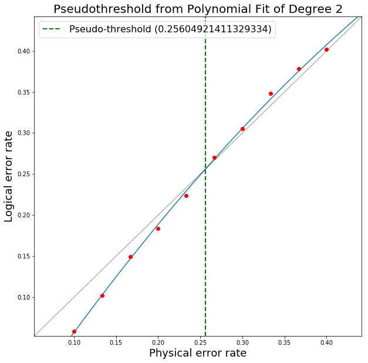

Monte Carlo Script
In this appendix, I present how PECOS can be used to create a script to runs a Monte Carlo simulation to determine logical error-rates versus physical error-rates for a fixed distance of a medial surface-code patch. The break-even point where the physical error-rate equals the logical error-rate is known as the pseudo-threshold. The threshold is the value the pseudo-threshold converges to as the distance of the code approaches infinity.
We begin by creating a Python script error_rates.py and importing NumPy and PECOS:
import numpy as np
import pecos as pc
For this example, we will evaluate the identity gate of SurfaceMedial4444 and start in the ideal logical zero-state:
surface = pc.qeccs.SurfaceMedial4444(distance=3)
logic = pc.circuits.LogicalCircuit(layout=surface.layout)
logic.append(surface.gate('ideal init |0>'))
logic.append(surface.gate('I', num_syn_extract=1))
circ_runner = pc.circuit_runners.Standard(seed=0)
logical_ops = surface.instruction('instr_syn_extract').final_logical_ops[0]
Here we also initialize the circuit_runner we will use and create the variable logical_ops, which stores the
logical operations of the QECC. This can be used to determine the logical error-rate since we can track whether errors
flip the signs of the logical operators.
Now we choose the depolarizing channel as our noise model (see Error Generators) and the MWPM decoder (see Decoders) to interpret syndromes and determine recovery operations:
depolar = pc.error_gens.DepolarGen(model_level='code_capacity')
decode = pc.decoders.MWPM2D(surface).decode
We next create the function determine_fails to decide if logical error occurs by examining whether, after applying
a recovery operation to the state, errors have flipped logical \(Z\). Note, since we are just protecting a logical
zero-state we are only concerned with errors that flip the sign of the logical \(Z\) operator. \(Z\) errors do
not affect the state.
The determine_fails function is:
def determine_fails(meas, decoder, circ_runner, state, logical_ops, fails):
if meas:
recovery = decoder(meas)
circ_runner.run(state, recovery)
sign = state.logical_sign(logical_ops['Z'], logical_ops['X'])
fails += sign
return fails
We are now almost ready to define the Monte Carlo loop. First, however, we set runs to represent the number of
evaluations we will make per physical error-rate. Next, we add the variable ps, which is set to an array of 10
linearly space points between 0.1 and 0.3 to serve as the physical error-rates that we will evaluate. This array is
created by NumPy’s linspace function. Finally, we include the variable plog, which stores the logical
error-rates we find corresponding to the physical error-rates in ps. All of this is done in the following lines:
runs = 10000
ps = np.linspace(0.1, 0.4, 10)
plog = []
We now create the Monte Carlo loop, which prepares a fresh initial state, applies depolarizing noise with a probability chosen by looping over ps, and counts the number of failures (logical flips) to determine the logical error-rate, which is stored in plog:
for p in ps:
fails = 0
for i in range(runs):
state = pc.simulators.SparseSim(surface.num_qudits)
meas, _ = circ_runner.run(state, logic, error_gen=depolar, error_params={'p': p})
fails = determine_fails(meas, decoder, circ_runner, state, logical_ops, fails)
plog.append(fails / runs)
print('ps=', list(ps))
print('plog=', plog)
When this script is ran, an example output is:
ps= [0.1, 0.13333333333333336, 0.16666666666666669, 0.2, 0.23333333333333336, 0.2666666666666667,
0.30000000000000004, 0.33333333333333337, 0.3666666666666667, 0.4]
plog= [0.0588, 0.102, 0.1497, 0.1835, 0.2241, 0.2702, 0.3052, 0.3485, 0.3783, 0.4017]
One can then use plotting packages such as Matplotlib to produce plots as appropriate for the data. PECOS provides a tool for quickly plotting and evaluating logical vs physical error-rates:
from pecos.tools import plot_pseudo
plot_pseudo(deg=2,plist=ps,plog=plog)
Running this tool results in the plot:
{kind=link}
The script described in this appendix can be used as a basis for developing other Monte Carlo simulation scripts for evaluating pseudo-thresholds or thresholds.